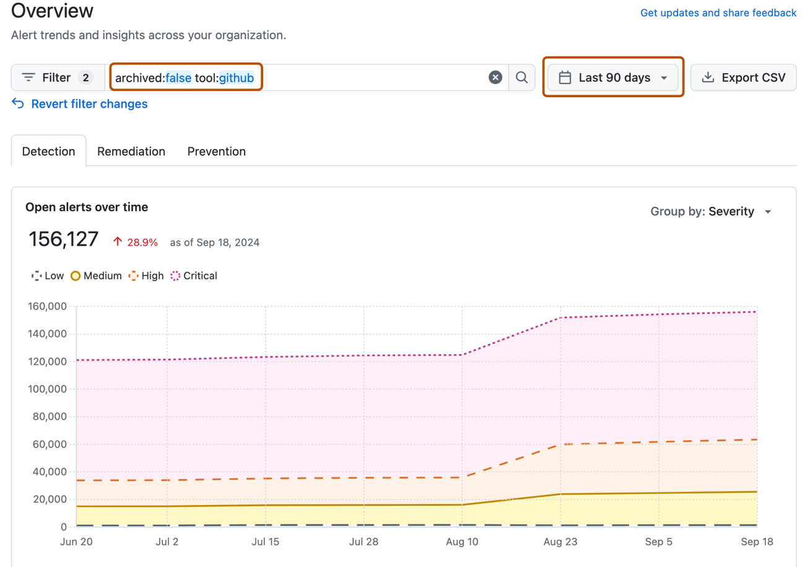

Monitor your organization security posture, identify high-risk repositories, and track alert remediation progress using the overview dashboard in security overview.
The overview page in security overview provides a consolidated dashboard of your organization's security landscape. You can filter the dashboard by time period, tool, and other criteria to focus on specific areas of interest. For more information about the overview dashboard, available metrics, and access permissions, see About security overview.
You can download a CSV file of the overview dashboard data for your organization or enterprise. For more information, see Exporting data from security overview.
Note
The summary views ("Overview", "Coverage" and "Risk") show data only for default alerts. Secret scanning alerts for ignored directories and non-provider alerts are all omitted from these views. Consequently, the individual alert views may include a larger number of open and closed alerts.
On GitHub, navigate to the main page of the organization.
Under your organization name, click the Security and quality tab.
The overview page is the primary view that you will see after clicking on the Security and quality tab. To get to the dashboard from another security overview page, in the sidebar, click Overview.
By default, the Detection tab is displayed. If you want to switch to another tab to see other metrics, click Remediation or Prevention.
Use the options at the top of the overview page to filter the group of alerts you want to see metrics for. All of the data and metrics on the page will change as you adjust the filters.

The dashboard displays metrics about alert status, remediation velocity, and high-risk repositories in your organization. For detailed explanations of each metric and how it's calculated, see Security overview dashboard metrics.
You can filter the dashboard by time period, tool, repository, and other criteria. For more information, see Filtering alerts in security overview.